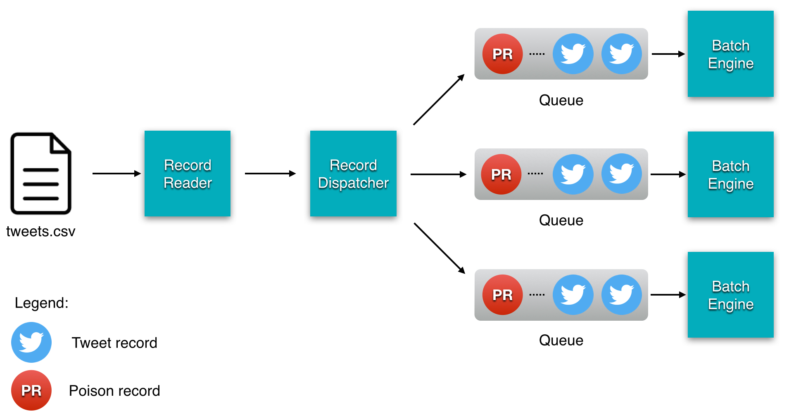
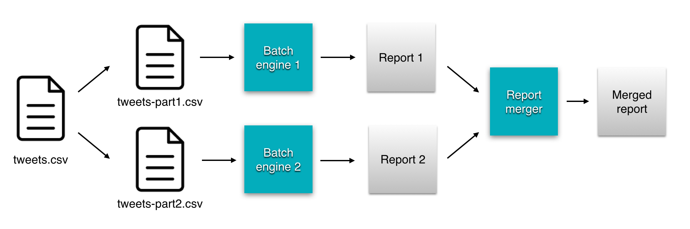

Easy Batch was designed with data processing parallelism in mind. The core Engine implements the java.util.concurrent.Callable interface which turns it into a unit of work that can be submitted to a java.util.concurrent.ExecutorService.
Using the java.util.concurrent.ExecutorService with a pool of threads allows you
to run multiple Easy Batch instances in parallel. There are at least 3 ways to process data in parallel:
In this tutorial, you will see an example of implementing each of these techniques using Easy Batch.
You will reuse the same application developed in the Hello world tutorial but with a huge tweets data source:
id,user,message
1,foo,easy batch rocks! #EasyBatch
2,bar,@foo I do confirm :-)
...
10000000,baz,@foo @bar what are you talking about? Am I in trouble?
In order to distribute work to multiple engines, Easy Batch provides the RecordDispatcher API:

Easy Batch comes with two implementations of the RecordDispatcher API:
RoundRobinRecordDispatcher: dispatches records to several java.util.concurrent.BlockingQueue queues in a round robin fashionContentBasedRecordDispatcher: dispatches records to several java.util.concurrent.BlockingQueue queues based on record contentIn this tutorial, you will learn how to use the RoundRobinRecordDispatcher to distribute tweets to 2 queues.
Poison records serve as End-Of-Stream messages, they are used to "kill" the engine (graciously).
Easy Batch provides the PoisonRecord utility class to stop the engine when all data has been read.
Poison records have no business value, you should filter them using the convenient built-in PoisonRecordFilter.
Here is the code to setup such a configuration:
public class ParallelTutorialWithRecordDispatching {
private static final int QUEUE_SIZE = 32;
private static final int THREAD_POOL_SIZE = 2;
public static void main(String[] args) throws Exception {
// Input file tweets.csv
File tweets = new File(args[0]);
//Create queues
BlockingQueue<Record> queue1 = new ArrayBlockingQueue<Record>(QUEUE_SIZE);
BlockingQueue<Record> queue2 = new ArrayBlockingQueue<Record>(QUEUE_SIZE);
// Build easy batch engines
Engine engine1 = buildBatchEngine(queue1);
Engine engine2 = buildBatchEngine(queue2);
//create a 2 threads pool to call engines in parallel
ExecutorService executorService = Executors.newFixedThreadPool(THREAD_POOL_SIZE);
//submit workers to executor service
Future<Report> reportFuture1 = executorService.submit(engine1);
Future<Report> reportFuture2 = executorService.submit(engine2);
//create a record dispatcher to dispatch records to previously created queues
RecordDispatcher recordDispatcher
= new RoundRobinRecordDispatcher(Arrays.asList(queue1, queue2));
//read data source and dispatch records to queues in round-robin fashion
FlatFileRecordReader flatFileRecordReader = new FlatFileRecordReader(tweets);
flatFileRecordReader.open();
while (flatFileRecordReader.hasNextRecord()) {
Record record = flatFileRecordReader.readNextRecord();
recordDispatcher.dispatchRecord(record);
}
flatFileRecordReader.close();
//send poison records when all input data has been dispatched to workers
recordDispatcher.dispatchRecord(new PoisonRecord());
//wait for easy batch instances termination and get partial reports
Report report1 = reportFuture1.get();
Report report2 = reportFuture2.get();
//merge partial reports into a global one
ReportMerger reportMerger = new DefaultReportMerger();
Report finalReport = reportMerger.mergerReports(report1, report2);
System.out.println(finalReport);
//shutdown executor service
executorService.shutdown();
}
public static Engine buildBatchEngine(BlockingQueue<Record> queue) {
return new EngineBuilder()
.reader(new QueueRecordReader(queue))
.filter(new PoisonRecordFilter())
.processor(new TweetProcessor())
.build();
}
}Since the RecordDispatcher dispatches records to a java.util.concurrent.BlockingQueue,
you should be able to read data from this type of queues. Easy Batch comes with a built-in QueueRecordReader to
save you from writing the reading code yourself.
When the reader finishes reading the data source, it sends a PoisonRecord to stop engines.
You have distributed the work across multiple engines, so you will get partial reports at the end of execution of each worker engine.
How do you get a single global report for all the work? This is where the ReportMerger comes to play,
that is, to merge partial reports into a global one.
It is a common technique to split the data source into multiple slices as follow:

Easy Batch does not provide a feature to partition input data. If you decided to split your data source into multiples parts,
you can still use Easy Batch to process them in parallel using a java.util.concurrent.ExecutorService.
This would not have been possible if Easy Batch's engine wouldn't implement the java.util.concurrent.Callable interface.
Here is a sample of how to use multiple engines to process data source parts in parallel:
public class ParallelTutorialWithDataSplitting {
private static final int THREAD_POOL_SIZE = 2;
public static void main(String[] args) throws Exception {
// Input file tweets-part1.csv
File tweetsPart1 = new File(args[0]);
// Input file tweets-part2.csv
File tweetsPart2 = new File(args[1]);
// Build worker engines
Engine engine1 = buildEngine(tweetsPart1);
Engine engine2 = buildEngine(tweetsPart2);
//create a 2 threads pool to call worker engines in parallel
ExecutorService executorService = Executors.newFixedThreadPool(THREAD_POOL_SIZE);
Future<Report> report1 = executorService.submit(engine1);
Future<Report> report2 = executorService.submit(engine2);
System.out.println("Report 1 = " + report1.get());
System.out.println("Report 2 = " + report2.get());
executorService.shutdown();
}
private static Engine buildEngine(File file) throws Exception{
return new EngineBuilder()
.reader(new FlatFileRecordReader(file))
.processor(new TweetProcessor())
.build();
}
}In this example, you have used multiple threads within the same JVM to process data in parallel. You can also launch separate JVMs for each part.
The second point to pay attention to, you should consider as in this sample creating two engines with separate instances of record readers and processors to avoid any thread-safety issues.
Sometimes it is just impossible to split the data source into multiple parts. The third technique is to use a single data source but to instruct worker engines to process separate parts and filter the rest of the data source.
Let's see an example:
tweets.csv file, process records 1-2 and filter records 3-4.tweets.csv file, process records 3-4 and filter records 1-2.The following listing shows the code to achieve this configuration:
public class ParallelTutorialWithDataFiltering {
private static final int THREAD_POOL_SIZE = 2;
public static void main(String[] args) throws Exception {
// Input file tweets.csv
File tweets = new File(args[0]);
// worker engine 1: process data from tweets.csv, filter records 3-4
Engine engine1 = buildEngine(tweets, new RecordNumberGreaterThanFilter(2));
// worker engine 2: process data from tweets.csv, filter records 1-2
Engine engine2 = buildEngine(tweets, new RecordNumberLowerThanFilter(3));
//create a 2 threads pool to call worker engines in parallel
ExecutorService executorService = Executors.newFixedThreadPool(THREAD_POOL_SIZE);
Future<Report> report1 = executorService.submit(engine1);
Future<Report> report2 = executorService.submit(engine2);
System.out.println("Report 1 = " + report1.get());
System.out.println("Report 2 = " + report2.get());
executorService.shutdown();
}
private static Engine buildEngine(File file, RecordFilter recordFilter) throws Exception{
return new EngineBuilder()
.reader(new FlatFileRecordReader(file))
.filter(recordFilter)
.processor(new TweetProcessor())
.build();
}
}To run the tutorials, proceed as follow:
$>git clone https://github.com/benas/easy-batch.git
$>cd easy-batch
$>mvn install
$>cd easybatch-tutorials
$> # Launch the record dispatching tutorial
$>mvn exec:java -PrunParallelTutorialWithRecordDispatching
$> # Launch the data source splitting tutorial
$>mvn exec:java -PrunParallelTutorialWithDataSplitting
$> # Launch the data source filtering tutorial
$>mvn exec:java -PrunParallelTutorialWithDataFiltering
The complete source code of this tutorial is available here.
In this tutorial, you have seen at least 3 ways of how to process data in parallel using multiple worker engines in order to speed up the overall processing time.
The following table summarizes the advantages and drawbacks for each approach:
| Approach | Advantages | Drawbacks |
|---|---|---|
| Dispatching records | Best way to distribute work across multiple worker engines. | Need to setup an additional record reader and queues. |
| Splitting the data source | Each engine reads only its own part and not the whole data source | Need to split the data source into multiple parts |
| Filtering the data source | No need to split the input data source into multiple parts | Each engine will read the whole data source |
Using the RecordDispatcher API should be your first choice when dealing with data processing in parallel
because it is more efficient than other techniques and provides the most natural way of distributing the work across multiple engines.
In the next, you will learn how to process data asynchronously using a JMS queue.